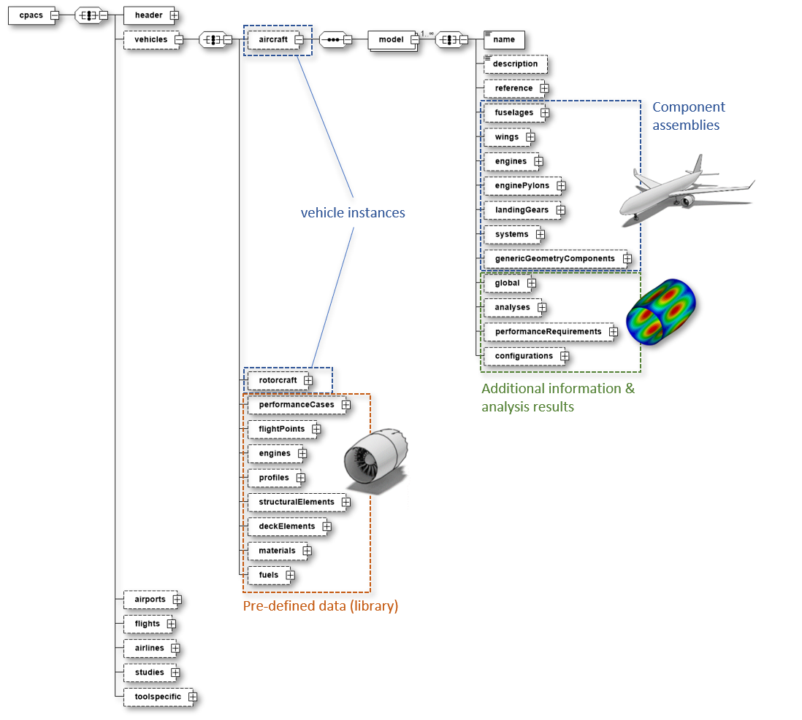

CPACS data is modeled in a hierarchical structure whose underlying concept follows a top-down description of a system-of-systems which decomposes a generic concept (e.g., an aircraft or rotorcraft) into a more detailed description of its components. This originates from the conceptual and preliminary design of aircraft, where the level of detail is initially low and continues to increase as the design process progresses.
For some concepts within CPACS, however, a bottom-up approach is applied where the components are first defined in detail (sometimes referred to as library) and then linked within an instantiated higher-level concept. This is advantageous when used multiple times within complex systems, such as engines, which only have to be defined once in order to be referenced several times on the aircraft. The combination of these two methodologies is known as middle-out approach and enables the goal to fully parametrize aeronautical systems.
